Es la cuarta opción del menú superior. A continuación se muestra una imagen del menú.

Ilustración 1. Menú operaciones básicas personalizadas.
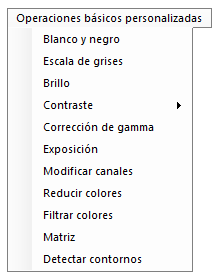

En este menú puede encontrar las funciones básicas para modificar en una imagen pero, a diferencia del menú anterior, éstas pueden modificarse de forma manual. En esta guía, vamos a utilizar de ejemplo la mítica imagen de Lena, a continuación la podemos ver en su estado original.

Ilustración 2. Imagen original de Lena.

Binariza la imagen, es decir, cada píxel lo pasa a color blanco o negro. Esta función es muy sencilla, simplemente calcula la media de color para cada píxel ((ColorRojo+ColorVerde+ColorAzu)l/3) y en función del valor de salida de esta media, el píxel pasa a ser blanco o negro. Si la media es mayor o igual del valor seleccionado por el usuario (valor umbral), el píxel pasa a tener en sus tres canales (rojo, verde, azul) un valor de 255 (blanco), en caso contrario pasa a tener un valor 0 en todos sus canales (negro).

Ilustración 3. Menú blanco y negro.
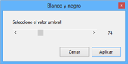

La imagen se ha binarizado y todos los valores son o negros o blancos.

Ilustración 4. Imagen de Lena en blanco y negro con valor umbral 74.
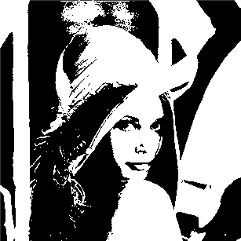

Con esta función se pasa a tener una imagen en escala de grises, es decir, cada píxel tiene un tono de gris. Los tonos de gris se caracterizan por tener el mismo valor en todos los canales (RGB), siendo el menor valor el color negro (0,0,0) y el mayor en blanco (255,255,255).

Ilustración 5. Menú escala de grises.
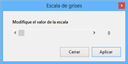

Para aplicar esta función hay que calcular, para cada píxel, la media de sus tres componentes (RGB) y dicha media aplicarla a los tres canales en el píxel tratado pero teniendo en cuenta el valor seleccionado por el usuario. Si se tiene un píxel con valores; Rojo = 100, Verde = 200, Azul= 50, se debe calcular la media ((100+200+50)/3) y aplicar el valor resultante a los tres canales, por lo tanto, el píxel resultante tendría los siguientes valores para cada canal; Rojo = (100+200+50)/3, Verde = (100+200+50)/3, Azul = (100+200+50)/3, haciendo el cálculo sería, Rojo = 116, Verde = 116, Azul = 116, y en función del valor seleccionado por el usuario, se calculará el valor de salida. Realmente lo que se hace es reducir el número de tonos de grises, desde la gama completa (con valor igual a 0), hasta blanco y negro (con valor igual a 127).
En la siguiente ilustración, se puede observar la imagen de Lena en escala de grises con un valor de 50.

Ilustración 6. Lena en escala de grises con valor 50.
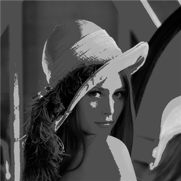

La imagen se ha pasado a escala de grises, pero una escala de grises reducida, es decir, no contiene los 256 valores diferentes de gris.
En el apartado brillo se puede aumentar o disminuir la intensidad de los píxeles. Al aumentar, por ejemplo, en diez puntos el brillo, a cada canal de cada píxeles se le suma 10. En caso de que el valor sea mayor de 255 o menor de 0, se le asigna 255 o 0 respectivamente a cada canal.

Ilustración 7. Menú modificar brillo.
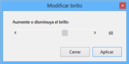

En la siguiente ilustración se puede observar la imagen de Lena a la que se le ha aumentado 68 puntos.

Ilustración 8. Lena con brillo aumentado en 68 puntos.
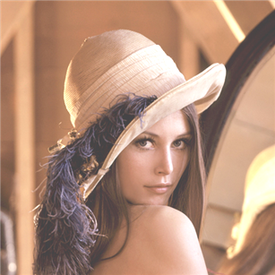

De la imagen anterior se saca la conclusión de que la imagen se ha aclarado, es decir, sus valores son más cercanos al blanco (255).
Al aumentar el contraste de una imagen se aumenta la diferencia entre los diferentes colores, mientras que si se disminuye, se atenúan las diferencias.
En Apolo hay dos funciones para modificar el contraste:
Contraste 1 (recomendado): con esta opción se obtienen excelentes resultados a la hora de dar mayor contraste a imágenes para visualizar mejor los detalles. Se le debe proporcionar un valor de entrada a partir del cual se calculará el valor de salida para cada píxel. Se le suma una unidad al valor de entrada y se divide entre la cuarta parte del número Pi, a este valor le llamaremos ValorCalculado. Si se selecciona el canal rojo de un píxel cualquiera, llamémosle, ValorRojo, y se le aplica la siguiente modificación, ValorRojo= ((ValorRojo – 128) * ValorCalculado) + 128, se obtiene el valor de salida del canal rojo de ese píxel.
Aplicando esto a todos los píxeles y los tres canales, se obtiene la imagen de salida.

Ilustración 9. Menú modificar contraste.
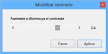

A continuación se muestran dos histogramas, siendo el de la izquierda el de la imagen original y el de la derecha tras una modificación de 1.4.

Ilustración 10. Diferencia contraste histogramas.
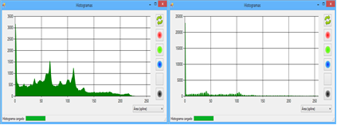

Como se ve claramente, se han estirado los valores para adaptarse en mayor medida a todo el rango de valores.
En la siguiente imagen puede verse el resultado de aplicar 0.4 puntos de contraste en la imagen de Lena.

Ilustración 11. Imagen de Lena aumentada en 0.4 puntos su contraste.
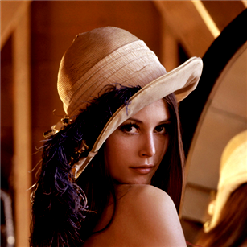

Comparada con la imagen original, puede apreciarse que los colores claros son más claros y los oscuros han aumentado sustancialmente.
Contraste 2: esta función estira los valores hasta llegar a los extremos seleccionados. El menú tiene una opción de seleccionar un valor mínimo y un valor máximo. El valor mínimo es el valor más bajo que se quiere que tenga el píxel con menor valor, y el valor máximo es lo contrario. Estos valores se analizan por canal, es decir, se calculará previamente el valor de intensidad más bajo para cada canal RGB.

Ilustración 12. Menú modificar contraste 2.
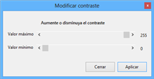

Ejemplificando, si seleccionamos como valor mínimo el 0 y valor máximo el 255, ajustará los niveles de la imagen para que se estiren hasta llegar a tener valores mínimos de 0 y máximos de 255.
Si se analiza con detenimiento esta función, en imágenes que cuyos valores mínimos y máximos son iguales o superiores que los máximos/mínimos de la imagen, no habrá modificación alguna.
En la imagen de la izquierda se muestra el histograma (del canal verde) de la imagen original, y la imagen de Lena a la que se ha dado un valor mínimo de 10 y máximo de 240.

Ilustración 13. Diferencia contraste histogramas.
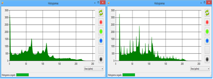

Como se observa claramente en los valores más cercanos a 0 (puesto que abundan más que los cercanos a 255), se ve que se han desplazado hacia la izquierda, es decir, han pasado a ser 10.

Ilustración 14. Lena con contraste disminuido.
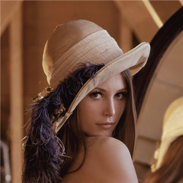

Si se compara con la imagen original, se detecta que es una imagen más apagada, menos contrastada.
La corrección de gamma es la responsable de la sensación de contraste de una imagen, y decimos sensación porque no es algo inherente a la imagen, sino a los dispositivos que la registran, a los dispositivos que la reproducen y a la luminosidad del entorno donde la estamos viendo.

Ilustración 15. Menú corrección de gamma.
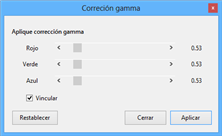

Si se accede al menú, se observa que requiere tres valores, uno para cada canal RGB. Y en función de esos valores de entrada se modificarán los diferentes canales para generar un valor de salida.

Ilustración 16. Lena corrección de gamma 0.53.
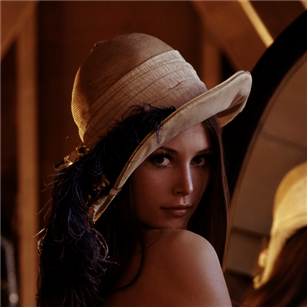

En la imagen anterior se puede observar que está más contrastada pero también más apagada la imagen. Observando el histograma se apreciará que los valores se han desplazado hacia el 0 y se han repartido más por todo el histograma.
Esta función aumenta o disminuye la luz en la imagen. El algoritmo simplemente divide cada canal de cada píxel entre el valor seleccionado en la menú mostrado a continuación.

Ilustración 17. Menú modificar exposición.
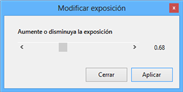

Si se quiere aumentar la exposición (hacer más clara la imagen), se deben seleccionar valores menores de 1, en caso contrario mayores.
En la siguiente imagen se puede apreciar una modificación de exposición en 0.68 puntos.

Ilustración 18. Lena sobreexpuesta.
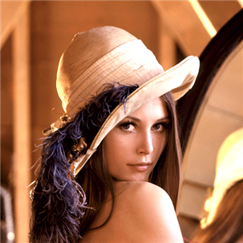

Comparada con la imagen original, es una imagen más clara, cuyos valores han tendido a 255. Es una imagen sobreexpuesta, ya que está quemada por la luz.
Esta función trabaja de una forma muy similar a aumentar brillo pero con la diferencia que la modifica de forma individual para cada canal.

Ilustración 19. Menú modificar canales.
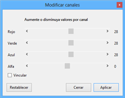

Como puede observarse en la imagen anterior, se puede seleccionar el valor a modificar para cada canal ARGB y este valor será lo que se aumentará o disminuirá a cada canal de cada píxel.
En la siguiente imagen se ha aumentado en 28 puntos el canal rojo y verde, y disminuido en 10 puntos el valor azul. El valor alfa se ha conservado.

Ilustración 20. Imagen de Lena con los canales modificados.
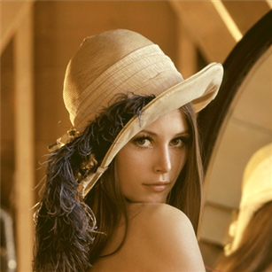

Como puede observarse la imagen se ha tornado hacia colores amarillos, puesto que al aumentar los canales verde y rojo y disminuir el canal azul, se ha favorecido la obtención de tonos amarillos (en color amarillo se crea con rojo más verde).
Con esta función se limita el número de colores por canal. Esta limitación se efectúa desde los valores intermedios del rango del canal, es decir, los valores se empiezan a eliminar empezando por el intermedio (128).

Ilustración 21. Menú reducir colores.
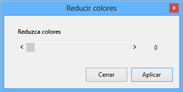

Seleccionando el valor 0, lo que ocurrirá es que para cada canal RGB únicamente quedarán dos colores el 1 y el 255. En la siguiente imagen se muestra a Lena a la que se ha aplicado reducción de colores a 0, es decir, sólo queda para cada canal el valor 1 y 255, por lo tanto el conjunto de la imagen sólo tendrá 2^3 colores.

Ilustración 22. Lena con colores reducidos.
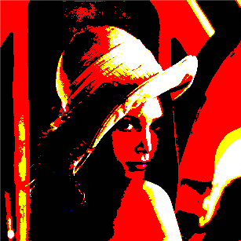

Como puede observarse la imagen tiene muy pocos colores. Viendo el histograma, únicamente hay valores 1 y 255 por cada canal.
Es una interesante opción que permite seleccionar un rango de colores y modificar su valor.
Dentro del menú se encuentran tres apartados, uno por canal como se ve en la ilustración.

Ilustración 23. Filtrar colores.
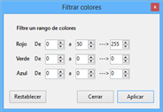

En la imagen anterior los colores cuyo canal rojo está entre 0 y 50 pasarían a ser de 255. Esta transformación se ve reflejada en la siguiente imagen.

Ilustración 24. Lena con colores filtrados.
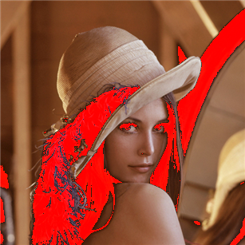

Se aprecia en la imagen que las zonas más oscuras, donde cuyo canal rojo oscila entre 0 y 50, han pasado a tener un valor en dicho canal rojo de 255, un rojo intenso.
Esta función trabaja de forma muy similar al efecto sepia, es más, puede decirse que es la base del efecto sepia. Lo que hace es asignar un peso a cada canal. En el siguiente ejemplo se muestra cómo se calcula el valor de cada canal en cada píxel.
Rojo = Rojo * Peso11 + Verde * Peso12 + Azul * Peso13
Verde = Rojo * Peso21 + Verde * Peso22 + Azul * Peso23
Azul = Rojo * Peso31 + Verde * Peso32 + Azul * Peso33
Donde cada peso corresponde a una valor de la matriz que se puede seleccionar en el menú.

Ilustración 25. Menú matriz.
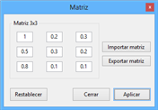

En la imagen anterior, se puede ver que el mayor peso se ha asignado al primer valor, por lo tanto, los resultados deberían ser tonos ligeramente rojizos.

Ilustración 26. Lena modificada por matriz.
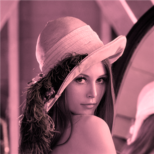

Revisando el histograma de la anterior imagen se observa que los valores más altos están en el histograma rojo.
Este menú también permite guardar una matriz simplemente pulsando en Exportar matriz, y seleccionando un nombre. Una vez guardada la matriz, se puede recuperar pulsando en el botón Importar matriz y seleccionándola.
Esta función determina los contornos en una imagen. Para ello, se sirve de 4 valores. El primero valor determina el umbral a partir del cual un píxel se asignará como contorno o no contornos (blanco o negro), y los tres restantes (rojo, verde, azul) son el peso que se asignará a cada canal.

Ilustración 27. Menú detectar contornos.
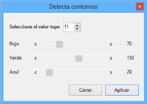

Aplicando a la imagen de Lena los valores anteriores, se creará una imagen en que cada píxel únicamente puede ser negro (contorno) o blanco (relleno).

Ilustración 28. Lena contornos.
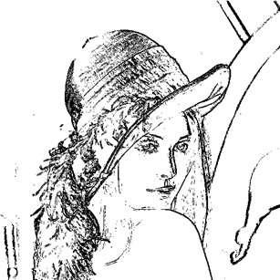

Como se aprecia en la imagen el resultado no es muy bueno ya que no determina bien los contornos. Se pueden ir modificando los valores para ajustarse a la imagen en concreto, pero automatizar esta función para que detecte siempre de forma correcta los contornos en cualquier tipo de imagen es muy complejo.
Created with the Personal Edition of HelpNDoc: Full-featured EBook editor